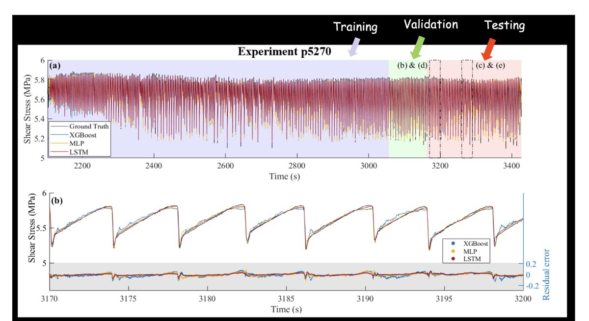
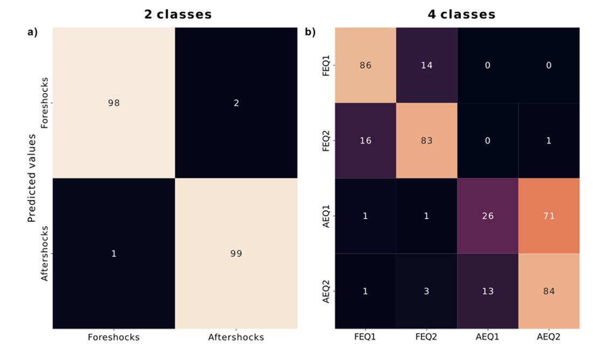
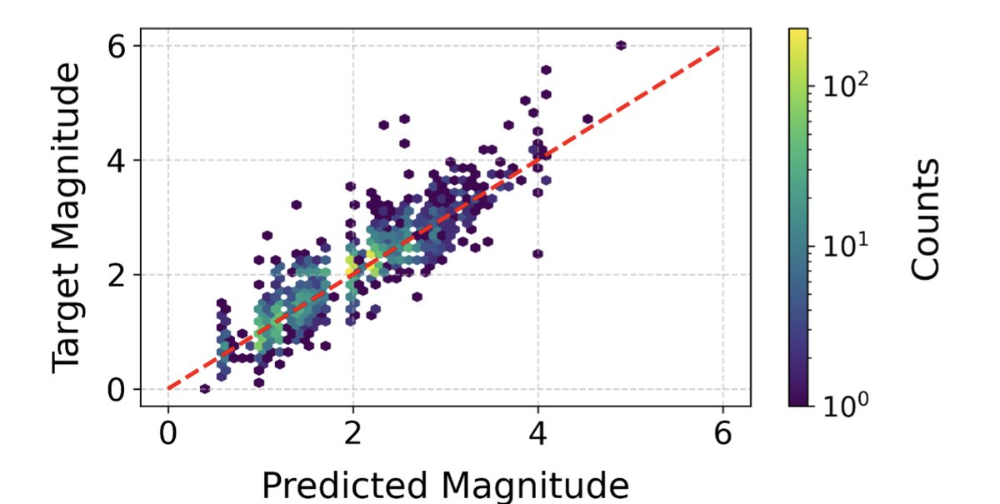
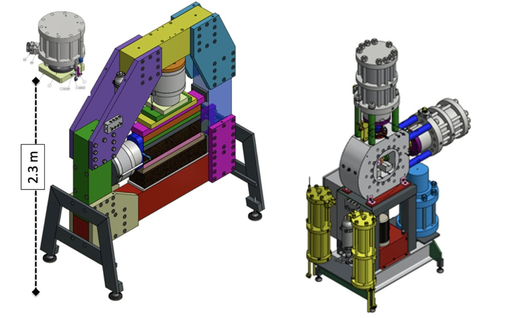

FIS 3 Advanced Grant · Sapienza Università di Roma · 2026–2031
COLOSSEO
COLlaboratOrium for earthquake physics using AI, Seismology, data SciEnce and laboratory Observations
Earthquakes are one of our greatest natural hazards. Even a modest improvement in our ability to forecast them would have a major impact on public safety, economic health and the energy transition. COLOSSEO brings together experts in laboratory rock mechanics, seismology, geology and artificial intelligence to understand how earthquakes start, what signals precede them, and whether those signals can be read in nature.
- Program
- MUR Fondo Italiano per la Scienza 3, Advanced Grant
- Duration
- 60 months, from 1 Sep. 2026
- Host
- Dip. Scienze della Terra, Sapienza
- ERC field
- PE10_7 Physics of the Earth's interior, seismology
Why now
Earthquake forecasting today rests largely on incomplete historical records rather than on models of earthquake physics and measurements of the stress state of faults. The 2016 Amatrice–Norcia sequence in central Italy and the 2023 Turkey–Syria earthquakes are recent reminders of what is at stake.
Recent work opens a path forward. In the laboratory we can now reproduce the full range of fault slip behavior, from slow slip to fast rupture. Lab earthquakes are preceded by clear, consistent precursors: a cascade of micro-failures that radiate elastic energy and foretell catastrophic failure. Machine learning and deep learning can predict the timing of lab earthquakes and the shear stress on the fault, and the same techniques have begun to work on real faults.
The central question
Can lab earthquake prediction be extended to tectonic faults? COLOSSEO tests this by pairing new laboratory experiments with AI models of seismic and geodetic data from real faults, and by checking whether the results generalize across tectonic settings, including earthquakes induced by fluid injection.
Research milestones
The project is organized around seven milestones that run in parallel across the five years.
- M1
Lab earthquake physics and friction laws
Rate-and-state friction and the transition from stable creep to slow and fast labquakes, on large, geometrically complex faults.
- M2
Foreshocks and precursors, lab vs. field
Why precursors are common in the lab but rare in nature: elastic-wave precursors, preslip versus stress state, and b-value changes.
- M3
Fluid-injection induced seismicity
Lab earthquakes under pore-fluid pressure and drained to undrained conditions, relevant to geothermal energy and CO₂ storage.
- M4
Lab catalogs, location and phase association
Locating lab earthquakes with deep-learning phase association and travel-time neural fields.
- M5
Generalizable lab earthquake prediction
Models that transfer between experimental conditions and predict failure time, shear stress and labquake magnitude.
- M6
AI for seismic and geodetic data
Tracking fault-zone elastic properties and stress state through the seismic cycle on natural faults.
- M7
Foundation models and LLMs for seismology
General-purpose models for seismic waveforms and rapid estimation of earthquake magnitude and location for early warning.
Starting points
Results from our earlier work in the ERC Advanced Grant TECTONIC (project page · CORDIS) that COLOSSEO builds on.




Impact and open science
COLOSSEO aims to determine whether the precursors seen before laboratory earthquakes can be identified in nature, and under what conditions large earthquakes are preceded by a cascade of micro-failures. For energy applications, the project will test whether such signals exist under geothermal reservoir conditions and develop models that could guide injection pressure and volume to reduce seismic risk.
The project will train PhD students and postdocs at the boundary of AI and earthquake science. We will openly distribute:
Some of these data are already available in our open lab data archive.